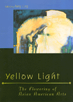

<body bgcolor="#FFFFFF" text="#000000" link="#0000FF" vlink="#CC0000" alink="#CC0000"><center><hr width="350" size="1" align="center" noshade>Is there a distinctive Asian American creative sensibility?<hr width="350" size="1" align="center" noshade><p><a href="https://cdcshoppingcart.uchicago.edu/Cart/ChicagoBook.aspx?ISBN=9781566396707&&PRESS=temple" target="_top">Buy this book!</a> | <a href="https://cdcshoppingcart.uchicago.edu/Cart/Cart.aspx?PRESS=temple" target="_top">View Cart</a> | <a href="https://cdcshoppingcart.uchicago.edu/Cart/Cart.aspx?PRESS=temple" target="_top">Check Out</a></p><p></p></center><!--none//--><h1>Yellow Light</h1>
<H2>The Flowering of Asian American Arts</H2>
<h3>edited by Amy Ling</h3>
<P>cloth 1-56639-670-0 $44.50, <FONT COLOR=#990033>Out of Print</FONT>
<br>paper 1-56639-817-7 $43.95, May 00, <FONT COLOR=#990033>Available</FONT>
<BR> 384 pp
7x10
</P><BLOCKQUOTE><I>"</i>Yellow Light<I> is an impressive undertaking that deserves recognition as an introduction to contemporary Asian American arts, and more importantly, as an exploration of the diversity of that community.... [It] is a testament to the Asian American creative spirit and another step toward a new understanding of contemporary art."</I>
<br>&#151<b><I>MultiCultural Review</I></b><I></I></BLOCKQUOTE>
<P>Amy Ling brings together in one comprehensive volume poets, novelists, dramatists, musicians, songwriters, composers, filmmakers, choreographers, and performance artists who span three generations and represent the broad spectrum of ethnicities that make up Asian America. They share thoughts on their work, their audiences, and their relationship to the Asian American rubric and American life and culture. They provide a rare glimpse of the inspirations and aspirations out of which their energy and ideas grow and place their work, each differently, in the complex fabric of American life. An indispensible anthology of work and an inspiring and provocative cultural record, <I>Yellow Light</I> casts a revealing glow on the contradictions, influences, imagination, and humanity expressed through the vastly varied creative projects of Americans with Asian roots. </P>
<P>This book will engage readers interested in Asian American literature, film, and culture and students and scholars of Asian American studies, American culture, and multicultural studies. </P>
<p><i>What is Asian America?
<br>&nbsp;&nbsp;&nbsp;a place?
<br>&nbsp;&nbsp;&nbsp;a race?
<br>&nbsp;&nbsp;&nbsp;a frame of reference?
<br>&nbsp;&nbsp;&nbsp;a government-imposed expedient?
<br>&nbsp;&nbsp;&nbsp;a box to check on a form?
<br>It's a dream in the heart
<br>&nbsp;&nbsp;&nbsp;Like Bulosan's claim,
<br>&nbsp;&nbsp;&nbsp;a tug in the gut,
<br>&nbsp;&nbsp;&nbsp;a gleam of recognition:
<br>&nbsp;&nbsp;&nbsp;Asian ancestry
<br>&nbsp;&nbsp;&nbsp;American struggle.</i>
<br>&#151<b>Amy Ling</b>
<BR>&nbsp;<h2>Excerpt</h2><P>Excerpt available at <a href="http://www.temple.edu/tempress">www.temple.edu/tempress</a></p>
<BR>&nbsp;<h2>Reviews</h2>
<p><i>"Although treating only Asian American artists, by inference this book goes far beyond that group, engaging the reader in questions about ethnicity of all persuasions. As such, this is a very telling work about conditions and aspirations of multicultural artistic populations. "</i>
<br>&#151<b><I>Choice</I></b>
<p><I>"...a valuable resource and an important marker of the state of Asian American creativity at the end of the twentieth century."</I>
<br>&#151<b><I>Journal of Asian American Studies</I></b>
<BR>&nbsp;<h2>Contents</h2><P>
<P>Acknowledgments
<br>Introduction: What's in a Name
<p><b>Part I: The Written Word</b>
<br>C.Y. Lee, Novelist: <i>The Short Story That Changed My Fate</i>
<br>Kim Yong Ik, Novelist: "Home Again, 1945" (from <i>Gourd Hollow Dance</i>), From <i>Elegy</i> by Kim Udam
<br>Mitsuye Yamada, Poet: <i>That Man</i>, <i>In Some Countries</i>
<br>Diana Chang, Novelist and Poet: <i>The Oriental Contingent</i>
<br>Sook Nyul Choi, Memorist and Novelist: From <i>Year of Impossible Goodbyes</i>
<br>Maxine Hong Kingston, Memoirist and Novelist: From <i>Tripmaster Monkey</i>
<br>Peter Bacho, Novelist: <i>A Family Gathering</i>
<br>Arthur Sze, Poet: <i>In Your Honor</i>, <i>The Redshifting Web</i>
<br>Meena Alexander, Poet, Novelist, and Memoirst: <i>Imagining Dora</i>
<br>Darrell Lum, Fiction Writer and Playwright: <i>Paint</i>
<br>Garrett Hongo, Poet: <i>Ministry: Homage to Kilauea</i>
<br>David Mura, Poet, Memorist, and Performance Artist: <i>The Colors of Desire</i>
<br>Karen Tei Yamashita, Novelist: <i>Siamese Twins and Mongoloids</i>
<br>Chitra Banerjee Divakaruni, Poet and Fiction Writer: <i>Clothes</i>
<br>Kirin Narayan, Anthropologist and Novelist: "Firoze Ganjifrockwala" (from <i>Love, Stars, and All That</i>)
<br>Katherine Min, Poet and Fiction Writer: <i>The Brick</i>
<br>Stewart David Ikeda, Novelist: <i>Roughie</i><br>
<p><b>Part II: Images, the Spoken Word, Dance, and Music</b>
<br>Flo Oy Wong, Artist: <i>Made in USA: Angel Island Shhh</i>, <i>My Mother's Baggage</i>, <i>Baby Jack Rice Story: The Corner Beckoned</i>
<br>Munio Makuuchi, Artist and Poet: <i>From Lake Minidoka to Lake Mendota</i>, <i>Black Diamond, Rooting for Coal</i>, <i>Fairgrounds Called Camp Harmony?</i>, <i>Gathering the Lost Tribes under Blue-Spot-Tailed Golden Eagle Wings</i>, <i>Diane as Victory Garden&#151Even 1/16 "Japanese" Blood</i>
<br>Ping Chong, Playwright: <i>98.6&#151A Convergence in 15 Minutes</i>
<br>Genny Lim, Poet and Playwright: From <i>La China Poblana</i>
<br>David Henry Hwang, Playwright: <i>Trying to Find Chinatown</i>
<br>Velina Hasu Houston, Playwright and Poet: From <i>Tea</i>
<br>Dwight Okita, Playwright and Poet: <i>Richard Speck</i>, <i>Asian Men on Asian Men: The Attraction</i>
<br>Dan Kwong, Performance and Installation Artist: "Song for Grandpa" (from <i>Monkhood in 3 Easy Lessons</i>)
<br>Slant, Performance Group: Richard Ebihara, Wayland Quintero, Perry Yung: "No Menus Please" (from <i>Big Dicks, Asian Men</i>), "Diary of a Paper Son" (from <i>The Second Coming</i>)
<br>Christine Choy, Filmmaker: Stills from <i>Who Killed Vincent Chin?</i>
<br>Renee Tajima-Pe&#241a, Filmmaker: Stills from <i>America... or Honk if You Love Buddha</i>
<br>Eric Koyanagi, Filmmaker: Stills from <i>hundred percent</i>
<br>Garrett Richard Wang, Actor: <i>Response</i>
<br>William David "Charlie" Chin, Musician, Composer, and Writer: <i>Johnson's Store</i>
<br>Chris Iijima, Lawyer, Singer, and Songwriter: <i>Asian Song</i>
<br>Nobuke Miyamoto, Dancer, Singer, and Songwriter: <i>To All Relations/Mitakuye Oyasin</i>, <i>What is the Color of Love?</i>, <i>The Chasm</i>
<br>Peggy Myo-Young Choy, Dancer and Choreographer: <i>Response</i>
<br> Jon Jang, Composer and Pianist: From <i>Island: The Immigrant Suite</i>
<br>Fred Ho, Musician and Composer: <i>Response</i>
<br>Jamez Chang, Hip-Hop and Rap Artist: <i>Indiana Jones Chang</i>, <i>Longing for Home</i>, <i>Sai-i-ku, April 29</i>
<br>Ton Ger Xiong, Hip-Hop and Rap Artist: <i>Go Hmong Boy Go Hmong Boy Go: A Rap</i>, <i>We Are Hmong: A Rap</i>
<p>Permissions
</P><BR>&nbsp;<H2>About the Author(s)</H2>
<table><tr><td valign="top"><img src="/tempress/authors/1381_au.gif" height="90" width="75"></td><td width="100%" valign="middle"><p><P>The late <B>Amy Ling</B> was Professor in the Department of English and the Asian American Studies Program at the University of Wisconsin, Madison. She authored numerous books, including <I>Between Worlds: Women Writers of Chinese Ancestry</I> and <I>Chinamerican Reflections</I>, a chapbook of poems and paintings.</P></td></tr></table>
<BR><H2>Subject Categories</H2>
<p><A HREF="/tempress/general.html" TARGET="_top">General Interest</a>
<BR><A HREF="/tempress/asian_amer.html" TARGET="_top">Asian American Studies</a>
</p>
<BR><h2 class="inpageheading">In the series</H2>
<P><I><a href="http://www.temple.edu/tempress/asam_history.html" onMouseOver="window.status='Click for other books in this series!'; return true;" onMouseOut="window.status=''; return true;" target="_top">Asian American History and Culture</a></i>, edited by K. Scott Wong, Linda Trinh V�, and Cathy Schlund-Vials.
</p><p>Founded by Sucheng Chan in 1991, the <I>Asian American History and Culture</I>, series has sponsored innovative scholarship that has redefined, expanded, and advanced the field of Asian American studies while strengthening its links to related areas of scholarly inquiry and engaged critique. Like the field from which it emerged, the series remains rooted in the social sciences and humanities, encompassing multiple regions, formations, communities, and identities. Extending the vision of founding editor Sucheng Chan and emeriti editor Michael Omi and David Palumbo-Liu, series editors K. Scott Wong, Linda Trinh V�, and Cathy Schlund-Vials continue to develop a foundational collection that embodies a range of theoretical and methodological approaches to Asian American studies.</p>
<p align="center"><a href="https://cdcshoppingcart.uchicago.edu/Cart/ChicagoBook.aspx?ISBN=9781566396707&&PRESS=temple" target="_top">Buy this book!</a> | <a href="https://cdcshoppingcart.uchicago.edu/Cart/Cart.aspx?PRESS=temple" target="_top">View Cart</a> | <a href="https://cdcshoppingcart.uchicago.edu/Cart/Cart.aspx?PRESS=temple" target="_top">Check Out</a></p><p><font face="Arial" size="1"><a href="copyright.html" onMouseOver="window.status='Web Copyright Policy';return true;" onMouseOut="window.status=''" title="Web Copyright Policy">&copy;</a> 2015 <a href="http://www.temple.edu" target="new" onMouseOver="window.status='Link to Temple University home page';return true;" onMouseOut="window.status=''" title="Link to Temple University home page">Temple University</a>. All Rights Reserved. http://www.temple.edu/tempress/titles/1381_reg.html</font></p>